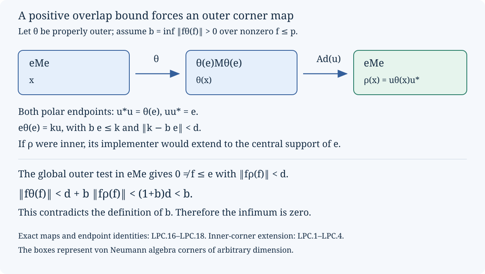

Local projection tests for outer automorphisms
Original exposition and diagram by OpenAI Codex, GPT-6 Astra, Ultra. New text and figure: CC0-1.0.
An outer automorphism moves some nonzero projection almost orthogonally to itself. Proper outerness makes this possible inside every prescribed nonzero projection. We prove these assertions for an arbitrary von Neumann algebra, retaining both endpoints of the partial isometries that transport a corner. No finiteness, faithful normal state or countability assumption is imposed.
Let \(M\ne0\) be a von Neumann algebra and \(\theta\) a normal star automorphism. We call \(\theta\) properly outer when its restriction to \(eMe\) is not inner for every nonzero projection \(e\) with \(\theta(e)=e\). Write \(c(e)\) for central support. Projection joins, bounded polar decomposition and arbitrary orthogonal strong sums are proved in Projection comparison, PC1–PC2 and PC4. Spectral projections and bounded Borel functions of a normal operator use Spectral calculus with its domains retained.
Two earlier programme theorems will be used at their full stated scope. The dual-center kernel theorem, K43 identifies the Connes spectrum with the kernel of the dual action on the crossed-product center, for arbitrary von Neumann algebras. Finite free actions, FP0–FP6 proves that every unitary cocycle of a free finite-group action is a coboundary, also without a countability or finiteness restriction on the algebra. Here “free” means absence of nonzero intertwiners at nonidentity group elements. Section 01 explains its equivalence with the invariant-corner definition.
Transporting an inner corner to its central support
Suppose \(0\ne e\in\operatorname{Proj}(M)\) and \(t\in M\) satisfy
\[ t^*t=\theta(e),\qquad tt^*=e,\qquad t\theta(x)t^*=x\quad(x\in eMe). \tag{LPC.1} \]Then \(z=c(e)=c(\theta(e))=\theta(z)\), because equivalence preserves central support. There is a unitary \(U\) in \(zM\) such that
\[ U\theta(y)U^*=y\qquad(y\in zM). \tag{LPC.2} \]Proof. Choose a maximal family of partial isometries \(r_i\) with \(r_i^*r_i\le e\) and mutually orthogonal final projections \(p_i=r_ir_i^*\le z\). These final projections fill \(z\). Otherwise the nonzero remainder \(q\le z\) has \(qMe\ne0\), since its central support meets \(c(e)\); polar decomposition of a nonzero element of this corner would enlarge the family.
Equation (LPC.1) gives \(t\theta(a)=at\) for \(a\in eMe\). Set
\[ U=\sum_i r_i t\theta(r_i^*). \tag{LPC.3} \]The summand indexed by \(i\) has initial projection \(\theta(p_i)\) and final projection \(p_i\): apply (LPC.1) to \(r_i^*r_i\) to check both products. Each family is orthogonal and fills \(z\), so the sum and its adjoint converge strongly over finite subsets, and \(U^*U=UU^*=z\).
For \(y\in zM\), every matrix coefficient \(r_i^*yr_j\) belongs to \(eMe\). Hence
\[ \begin{aligned} p_iU\theta(y)U^*p_j &=r_i t\theta(r_i^*yr_j)t^*r_j^*\\ &=r_ir_i^*yr_jr_j^*=p_iyp_j. \end{aligned} \tag{LPC.4} \]The finite sums of \(p_i\) converge strongly to \(z\). Equality of all these coefficients proves (LPC.2). The index set need not be countable. \(\square\)
In particular, an inner restriction to an invariant corner produces an inner restriction to an invariant central summand: if \(\theta(x)=sxs^*\) on \(eMe\), take \(t=s^*\). Conversely an inner central summand is already an invariant inner corner. Thus proper outerness is equivalent to absence of nonzero invariant inner central summands.
It is also equivalent to absence of a nonzero intertwiner \(a\) satisfying
\[ ax=\theta(x)a\qquad(x\in M). \tag{LPC.5} \]Here are the exact support details, also proved in Discrete Fourier columns, FC3. The positive operators \(a^*a\) and \(aa^*\) are central. The initial and final supports \(p,q\) of the polar part \(v\) are central and equivalent, so \(p=q\): commuting the central projections through \(v\) gives both inclusions. Spectral cutoffs of \(|a|\) in (LPC.5) give \(vx=\theta(x)v\). Substituting \(p\) and \(\theta^{-1}(p)\) shows \(\theta(p)=p\). Thus \(v\) implements the restriction on \(pM\). Conversely an implementer on an invariant central summand, extended by zero, gives (LPC.5).
There is a largest invariant inner central summand. Indeed take a maximal orthogonal family of such summands and sum their implementers strongly. The sum implements the restriction on their join. Any other inner central summand has no nonzero part outside that join, by maximality. The complement is therefore properly outer. Any automorphism commuting with \(\theta\) preserves this largest summand, since it transports both the summand and an implementer. These facts concern arbitrary orthogonal families, not just direct sums with countably many terms.
Inner perturbations preserve proper outerness. In the intertwiner formulation, an intertwiner for \(\operatorname{Ad}(w)\theta\), multiplied on the left by \(w^*\), is one for \(\theta\). A restriction of a properly outer action to an invariant corner is properly outer directly from its definition.
A single outer automorphism has a small-overlap projection
Theorem. If \(\theta\) is outer, then for every \(\varepsilon>0\) there is a nonzero projection \(f\in M\) such that
\[ \|f\theta(f)\|<\varepsilon. \tag{LPC.6} \]We first record two ways to produce such a projection.
An abelian displacement. A nonidentity automorphism \(\beta\) of an invariant abelian von Neumann subalgebra moves some projection \(q\); otherwise spectral approximation would make it the identity on every selfadjoint element. If \(q(1-\beta(q))\ne0\), take this projection as \(f\). It is orthogonal to \(\beta(f)\). If that difference is zero, then \(q<\beta(q)\), and
\[ f=\beta^{-1}(\beta(q)-q)=q-\beta^{-1}(q) \]is nonzero and lies under \(q\), while \(\beta(f)=\beta(q)-q\) lies under \(1-q\). In either case the overlap is exactly zero. No invariant state was used.
A negative spectral value. Suppose \(-1\) is in the action spectrum of \(\beta\). The complete discrete Banach-space spectrum argument in Cyclic towers, Section 2.1a gives norm-one approximate negative eigenvectors. That argument concerns an arbitrary invertible isometry: a smooth resolvent cutoff and its absolutely convergent Fourier series show that action spectrum is contained in operator spectrum, and a nearby exterior resolvent point proves the approximate-eigenvector assertion. It uses no finite-algebra hypothesis.
Taking a real or imaginary part, normalizing and choosing its sign, we obtain a selfadjoint contraction \(h\) with \(1\in\operatorname{spec}(h)\) and \(\|\beta(h)+h\|<2d\), for arbitrarily small \(d>0\). The projection \(f=1_{[1-d,1]}(h)\) is nonzero. On \(fH\), \(h\) is within \(d\) of one; on \(\beta(f)H\), it is within \(3d\) of minus one. For vectors in these two ranges,
\[ 2|\langle\xi,\eta\rangle| \le \|(1-h)\xi\|\,\|\eta\| +\|\xi\|\,\|(1+h)\eta\| \le4d\|\xi\|\|\eta\|. \tag{LPC.7} \]Therefore \(\|f\beta(f)\|\le2d\). Choosing \(2d<\varepsilon\) proves (LPC.6) in this case.
Proof of the theorem. If \(\theta\) moves the center, use the abelian argument. Assume it fixes the center pointwise. Since it is outer, the complement of its largest inner central summand is nonzero. Restrict to that summand, so that \(\theta\) is now properly outer and still fixes the center.
If every nonzero power is properly outer, the integer action is free by Section 01. The complete Fourier coefficient theorem FC0–FC4 gives
\[ M'\cap(M\rtimes_\theta\mathbb Z)=Z(M). \tag{LPC.8} \]Indeed every nonzero-degree coefficient of a relative-commutant element is an intertwiner for a nonzero power and therefore vanishes; uniqueness leaves its central degree-zero coefficient. Since \(\theta\) fixes \(Z(M)\), these coefficients commute with the implementing unitary as well. Thus the crossed-product center is exactly \(Z(M)\), fixed by the entire dual circle. The full-scope dual-center kernel theorem gives \(\Gamma(\theta)=\mathbb T\). Since \(\Gamma(\theta)\subseteq\operatorname{Sp}(\theta)\), the negative spectral argument applies.
Otherwise let \(r\ge2\) be the least positive integer for which \(\theta^r\) is not properly outer. Its largest inner central summand is nonzero and \(\theta\)-invariant, by Section 01. Restrict to it and write
\[ \theta^r=\operatorname{Ad}(v),\qquad v\in\mathcal U(M). \tag{LPC.9} \]All lower positive powers remain properly outer there. Commuting \(\theta\) with \(\theta^r\) shows \(\theta(v)=cv\) for a central unitary \(c\), and \(\theta(c)=c\). If \(c\ne1\), the invariant abelian algebra \(W^*(v,c)\) has nonidentity action. The abelian argument again applies.
Suppose \(c=1\). Bounded Borel calculus gives a \(\theta\)-fixed unitary \(w\) with \(w^r=v^*\). Put
\[ \gamma=\operatorname{Ad}(w)\theta. \quad\text{Then}\quad \gamma^r=\operatorname{id},\qquad \gamma^k=\operatorname{Ad}(w^k)\theta^k. \tag{LPC.10} \]Thus \(\gamma\) defines a free action of \(\mathbb Z/r\mathbb Z\), since its first \(r-1\) powers are properly outer. Choose a nonzero spectral projection \(e\) of \(w\) in a sufficiently short arc that
\[ \|(w-\lambda)e\|<d \quad\text{for some }\lambda\in\mathbb T. \tag{LPC.11} \]Such a projection exists because finitely many shorter arcs cover the circle. It is fixed by both \(\theta\) and \(\gamma\); their restrictions differ on this corner by at most \(2d\) in operator norm.
Let \(\zeta=e^{2\pi i/r}\). On \(eMe\), the scalar cocycle \(u_{[j]}=\zeta^j e\) satisfies the cocycle law for the restricted free cyclic action. The arbitrary-algebra finite-group theorem FP18 supplies a unitary \(a\in eMe\) with
\[ \gamma(a)=\zeta a. \tag{LPC.12} \]The invariant abelian algebra \(W^*(a)\subset eMe\) therefore has nonidentity action. Its abelian displacement gives \(0\ne f\le e\) with \(f\gamma(f)=0\). Consequently
\[ \|f\theta(f)\| \le\|\theta(f)-\gamma(f)\|<2d. \tag{LPC.13} \]Take \(2d<\varepsilon\). A projection obtained on a nonzero central summand remains a nonzero projection of the original algebra with the same overlap norm. This completes all cases. \(\square\)
The four local tests for proper outerness
Theorem. The following conditions on \(\theta\) are equivalent:
- \(\theta\) is properly outer.
- For every nonzero invariant projection \(e\), \(\|\theta|_{eMe}-\operatorname{id}_{eMe}\|=2\).
- For every nonzero projection \(p\) and every \(\varepsilon>0\), some \(0\le x\le p\) satisfies \(\|x-\theta(x)\|>1-\varepsilon\).
- For every nonzero projection \(p\) and every \(\varepsilon>0\), some nonzero projection \(f\le p\) satisfies \(\|f\theta(f)\|<\varepsilon\).
Proof of 1 implies 4. Suppose, to the contrary, that for some nonzero \(p\)
\[ b=\inf_{0\ne f\le p}\|f\theta(f)\|>0. \tag{LPC.14} \]Choose \(d>0\) with \((1+b)d<b\), and then a nonzero \(e\le p\) with \(\|e\theta(e)\|<b+d\).
Both compressed positive operators have a strict lower bound:
\[ e\theta(e)e\ge b^2e, \qquad \theta(e)e\theta(e)\ge b^2\theta(e). \tag{LPC.15} \]For the first, a nonzero spectral projection \(g\le e\) below some \(a<b^2\) would satisfy \(\|g\theta(g)\|^2\le\|g\theta(e)g\|\le a\), contradicting (LPC.14). If any spectrum lay below \(b^2\), one such nonzero spectral cutoff would exist. For the second, a nonzero spectral projection \(h\le\theta(e)\) below \(a<b^2\) would have \(\|eh\|^2\le a\). With \(g=\theta^{-1}(h)\le e\), this gives \(\|g\theta(g)\|=\|gh\|\le\|eh\|<b\), again impossible.
The right polar decomposition is therefore
\[ e\theta(e)=ku, \qquad k=(e\theta(e)e)^{1/2}, \qquad uu^*=e,\quad u^*u=\theta(e). \tag{LPC.16} \]Its positive part satisfies \(be\le k<(b+d)e\) in the spectral sense, so
\[ \|e\theta(e)-bu\|<d. \tag{LPC.17} \]The map \(\rho(x)=u\theta(x)u^*\) is an automorphism of \(eMe\). It is outer: if \(\rho=\operatorname{Ad}(s)\), then \(t=s^*u\) satisfies (LPC.1), making \(\theta\) inner on the nonzero central support of \(e\), contrary to proper outerness.
Section 02, applied to \(\rho\), supplies \(0\ne f\le e\) with \(\|f\rho(f)\|<d\). Since the initial support of \(fu\theta(f)\) is at most \(\theta(e)\), multiplication on the right by \(u^*\) preserves its norm. Thus
\[ \begin{aligned} \|f\theta(f)\| &=\|fe\theta(e)\theta(f)\|\\ &\le\|f(e\theta(e)-bu)\theta(f)\| +b\|fu\theta(f)\|\\ &<d+b\|f\rho(f)\|<(1+b)d<b. \end{aligned} \tag{LPC.18} \]This contradicts the infimum and proves 4.

The other implications. For a unit vector \(\xi\in fH\),
\[ \|(f-\theta(f))\xi\| \ge1-\|\theta(f)f\| =1-\|f\theta(f)\|. \tag{LPC.19} \]Thus 4 implies 3, using \(x=f\). For invariant \(e\), the operator \(2x-e\) is a contraction whenever \(0\le x\le e\), and its displacement is twice that of \(x\). Condition 3 therefore gives norm distance at least two on every invariant corner. The upper bound two follows from the two maps being isometries, proving 2.
Finally, if the restriction to an invariant nonzero \(e\) is \(\operatorname{Ad}(v)\), choose a nonzero short-arc spectral projection \(q\le e\) of \(v\) with \(\|(v-\lambda)q\|<1/2\). It is invariant, and for \(x\in qMq\),
\[ \|vxv^*-x\|\le2\|(v-\lambda)q\|\,\|x\|<\|x\|. \tag{LPC.20} \]Hence the norm distance on \(qMq\) is strictly less than two, contradicting 2. This proves 1 and completes the equivalence. \(\square\)
Finite orbit cuts and the role of every corner
Call \(\theta\) aperiodic if every positive power is properly outer. Negative powers then are too: an invariant corner for an automorphism is invariant for its inverse, and an inner restriction has an inner inverse.
For every nonzero projection \(p\), integer \(m\ge2\) and \(d>0\), there is \(0\ne f\le p\) such that
\[ \|\theta^i(f)\theta^j(f)\|<d \qquad(0\le i<j<m). \tag{LPC.21} \]To prove this, start with \(p_0=p\). Apply condition 4 successively to \(\theta,\theta^2,\ldots,\theta^{m-1}\), choosing \(0\ne p_k\le p_{k-1}\) with \(\|p_k\theta^k(p_k)\|<d\). Previous bounds persist on subprojections: for \(q\le r\),
\[ q\theta^k(q)=q\,[r\theta^k(r)]\,\theta^k(q), \quad\text{so}\quad \|q\theta^k(q)\|\le\|r\theta^k(r)\|. \tag{LPC.22} \]Set \(f=p_{m-1}\) and apply \(\theta^{-i}\) to each product in (LPC.21). This proves all the orbit bounds simultaneously. If \((m-1)d<1\), the orthogonalization theorem replaces this orbit family by orthogonal equivalent projections \(e_j\) with exactly the same join and \(\|e_j-\theta^j(f)\|\le3(m-1)d\). The cutting assertion itself uses no trace.
Why ordinary outerness is insufficient for a prescribed corner. On \(M=\mathbb C^3\), let \(\theta(z_1,z_2,z_3)=(z_2,z_1,z_3)\). Every inner automorphism of an abelian algebra is the identity, so \(\theta\) is outer. The first coordinate projection has a disjoint image, as Section 02 predicts. The third coordinate projection \(p\), however, is fixed and has no nonzero proper subprojection. For every nonzero \(f\le p\), \(\|f\theta(f)\|=1\). It fails the local test and is not properly outer.
Why the generator alone is insufficient for orbit cuts. The coordinate flip on \(\mathbb C^2\) is properly outer. Its only nonzero invariant projection is the identity, and the action there is nonidentity. Its square is the identity. Thus a nonzero projection cannot have pairwise almost disjoint translates at times \(0,1,2\) with tolerance below one: the first and third projections coincide. Aperiodicity tests every nonzero power precisely to exclude this obstruction.
Sources. Takesaki, Theory of Operator Algebras III, XVII.1, Definitions 1.1 and 1.5, Theorem 1.2 and Lemmas 1.3–1.4, pp.253–255. Connes, Outer conjugacy classes of automorphisms of factors, Theorem 1.2.1 and Lemmas 1.2.2–1.2.3, pp.391–393. The unrestricted spectral and finite-group inputs are the earlier programme proofs linked above; citations to the human sources do not replace those proofs.